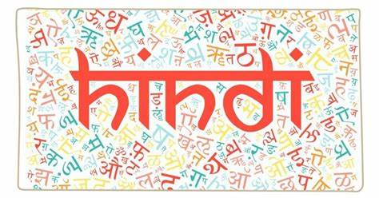
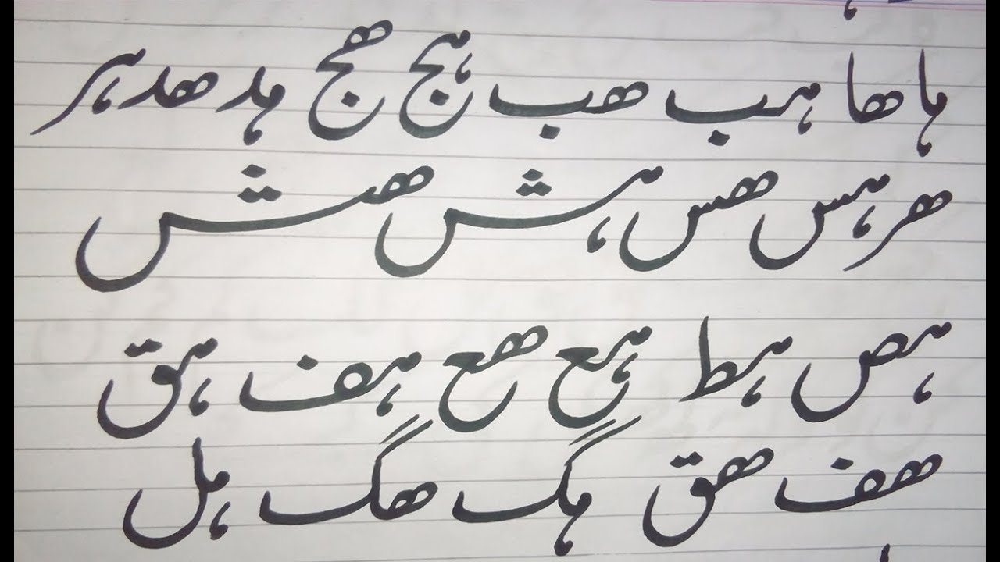
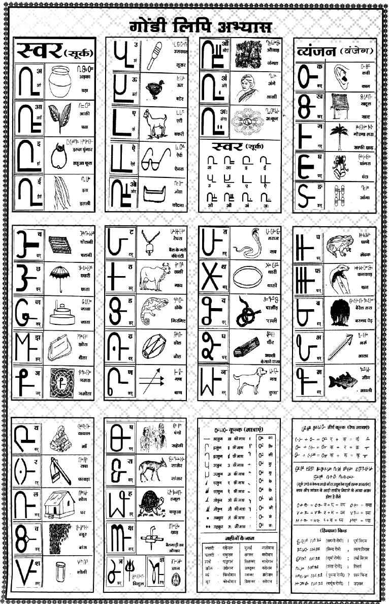

Languages Spoken
Madhya Pradesh is a linguistically diverse state with several languages spoken across different regions. Here’s an overview of the major languages.

Hindi:
Hindi is the official language of Madhya Pradesh and is widely spoken across the state.

Malwi:
Malwi is a dialect of Hindi spoken predominantly in the Malwa region of Madhya Pradesh.
